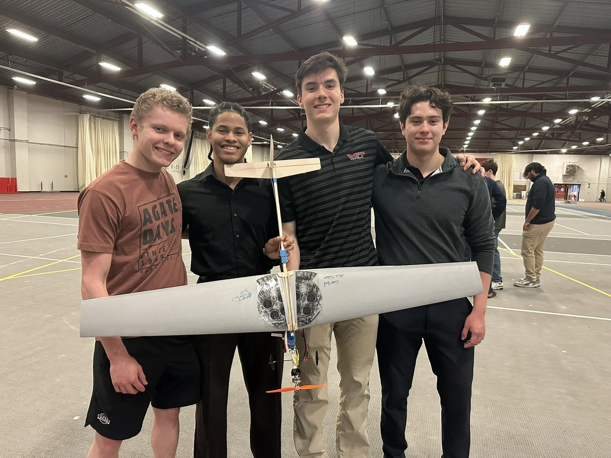
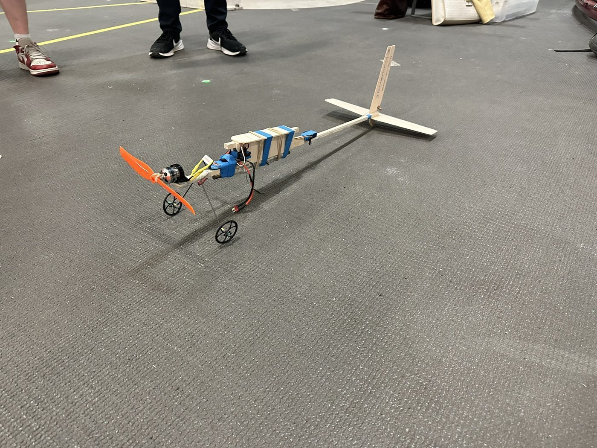
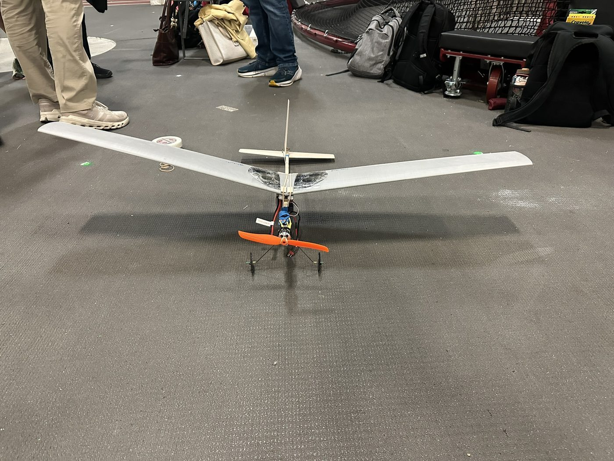
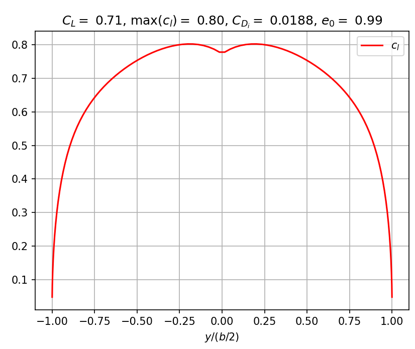
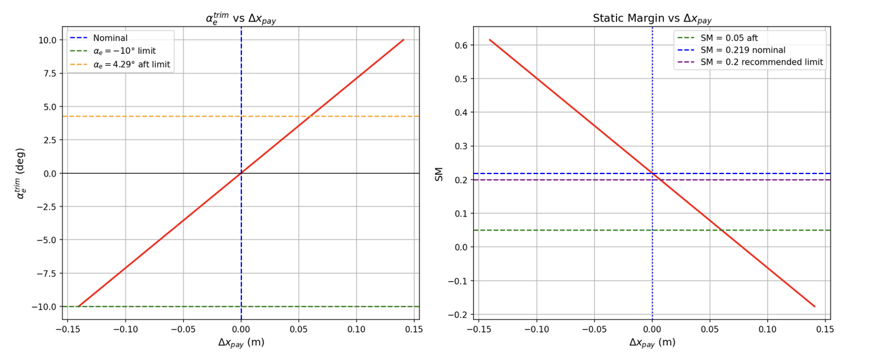

Design, Build, Fly — 5th Place Overall
Teamed up with three classmates as "The Millennium Falcons" (Team #5) in MIT's Unified Engineering Flight Competition — sizing, analyzing, building, and flying a competition RC airplane from scratch, trading off nominal flight speed against payload CG range under hard aerodynamic, structural, and stability constraints. Finished 5th place overall.
The Problem
UEFC scores each team's aircraft on two things pulling in opposite directions: nominal flight speed, and how far a payload mass can be shifted aft in flight (payload CG range) while staying controllable — all under hard constraints: a maximum lift coefficient, the maximum thrust available from the given motor, a wing bending-moment limit, tail volume coefficient ranges, a minimum spiral stability parameter, elevator deflection limits, and a static margin band. Push too hard for speed and you can't carry or shift payload safely; push too hard for payload range and you lose stability margin. We had to find a competitive point on that tradeoff using real aircraft design tools, then build hardware that actually matched the model.
Approach
We started in UEFC Part 1 with a design sizing study sweeping aspect ratio, wing area, taper ratio, and thickness ratio to maximize speed within the lift, thrust, and structural constraints, converging on a taper ratio of 0.5 and thickness ratio of 0.12. In Part 2, we ran a closed-loop iteration between a vortex lattice method (VLM) aerodynamic solver and the ScanARS sizing code: after each VLM run we checked the predicted lift coefficient and maximum sectional lift coefficient, re-ran ScanARS for updated aspect ratio and wing area, and repeated until the results converged. We ran a wing twist/washout study — 2° of root incidence and −3° of tip incidence — to smooth out a dip in the spanwise lift distribution and reduce the risk of tip stall. We chose tail volume coefficients (Vh = 0.50, Vv = 0.03) to compensate for a shorter-than-baseline tail moment arm, and deliberately picked a nominal static margin of 21.6% — slightly above the recommended range — to buy extra stability headroom in exchange for a larger safe aft-payload CG range, backing off to a 5% margin buffer at the aft-payload extreme.
What I Built
I ran the VLM-to-ScanARS closed-loop analysis that landed on our final wing parameters — aspect ratio 8.687, wing area 0.177 m², span 1.239 m, mean chord 0.143 m — and our performance figures: an 11.09 m/s nominal flight speed and a 0.404 payload fraction. I worked through the mass breakdown and component-location calculations with a teammate, and contributed to the team's final stability and control decisions, including the static margin selection and tail sizing. During the build, I worked with a teammate to construct and install the wing mount, aligned the servo/wing-mount assembly, sanded the wing to fit securely, sized and trimmed the fuselage to match the design geometry, and helped balance the finished aircraft's center of gravity to match our analysis.





Results & What I Learned
The as-built aircraft matched our Part 2 design intent almost exactly — wing area, aspect ratio, span, tail sizing, and moment arms all came out identical to spec. It flew successfully in both the nominal and aft-payload configurations: stable and predictable at nominal CG, with more sensitive (but still controllable) pitch response at the aft-payload extreme, consistent with the lower static margin we'd designed in. The team placed 5th overall in the competition. The main build challenge was maintaining geometric accuracy while cutting and assembling the foam wing panels — small asymmetries and structural flex slightly affected trim during flight testing, a good reminder that a model is only as good as the hardware built to match it.